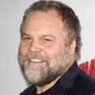
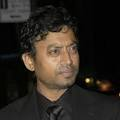
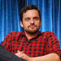
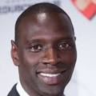
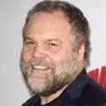
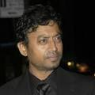
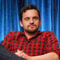
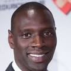

CINE COLOMBIA

Los hermanos Zach y Gray Mitchell visitan la isla Nublar, lugar del Parque Jurásico original, donde un nuevo parque temático llamado Jurassic World ha operado durante años. El propietario del parque, Simon Masrani, ha alentado al doctor Henry Wu a crear un dinosaurio híbrido para atraer visitantes. Mientras tanto, los niños conocen a su tía, Claire Dearing, gerente de operaciones del parque. Claire asigna a su asistente Zara para ser su guía, pero los niños la evaden y exploran el parque por su cuenta. Owen Grady, un veterano de la Marina, ha estado investigando la inteligencia de Blue, Delta, Charlie y Echo, los cuatro Velociraptores del parque. El jefe de seguridad de InGen, Vic Hoskins, cree que los raptores deben ser entrenados para uso militar a pesar de las objeciones de Owen. Masrani hace que Owen evalúe el recinto del nuevo dinosaurio híbrido del parque, el Indominus rex, antes de que su atracción sea abierta al público. Owen le advierte a Claire sobre el peligro de criar al Indominus en aislamiento, señalando su falta de socialización con otros animales.
 






